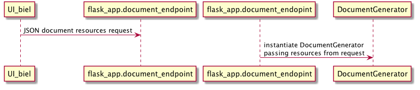
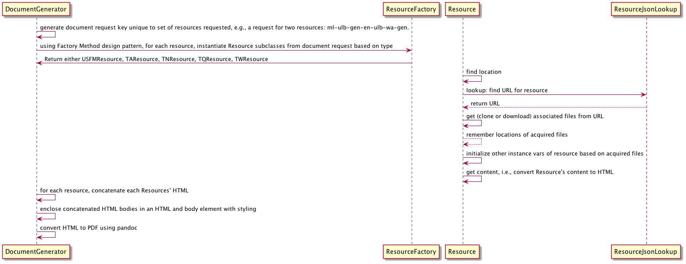
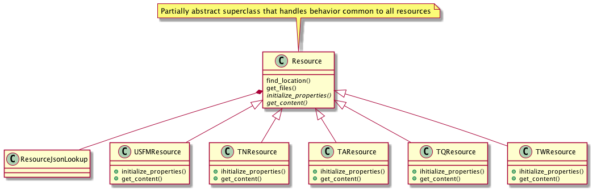
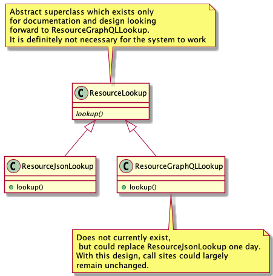
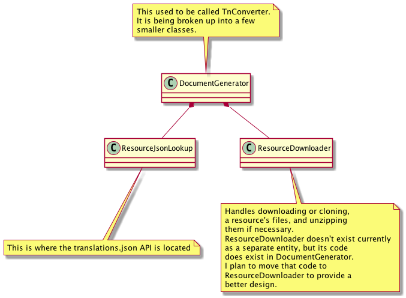

Table of Contents
- 1. Design notes
- 1.1. Requirements
- 1.2. JSON document generation request design for web client (BIEL)
- 1.3. Interactions at a high level
- 1.4. What works currently
- 1.5. Docker container
- 1.6. How to run a demo for yourself
- 1.7. (Bonus/optional material) Convenience web service endpoints for BIEL UI to call (if desired)
- 1.8. Oddities - differences from the norm in resources I've found
1 Design notes
1.1 Requirements
1.1.1 Requirement
Allow creating a document out of any combination of resources from any supported (in translations.json) language in any order.
1.1.2 Requirement
Produce PDF final document.
1.1.3 Requirement
If generation of PDF document takes longer than X threshold of time, then return a message to the user giving link where document will eventually be found. E.g., display message to user in interface, say after a cache miss on document request, or, via email. Details to be determined.
1.1.4 Requirement
Handle TN, TA, TW, TQ, ULB, UDB resource requests. Later perhaps also OBS, etc..
1.2 JSON document generation request design for web client (BIEL)
Currently the JSON looks like this, for example:
{ "resources":
{ "lang_code": "am", "resource_type": "ulb", "resource_code": "gen" },
{ "lang_code": "lpx", "resource_type": "tn", "resource_code": "exo" },
...
}
Each element in the JSON dictionary represents a resource. The whole dictionary represents all the resources you want in the final typeset document in the order you want them. Note that last point: the order. That could of course be changed, but I am for now making an assumption that BIEL's wizard would compose a JSON document generation request having resources in the order the user requested the document's resources to be represented.
1.2.1 Example request from test_flask.py
Example python client request using resources JSON dictionary to submit an
API call to generate a document composed of resources. I imagine BIEL
would make this client request, instead, in Javascript.
import json
import requests
payload = {}
payload["resources"] = [
{"lang_code": "am",
"resource_type": "ulb",
"resource_code": "gen"},
{"lang_code": "erk-x-erakor",
"resource_type": "reg",
"resource_code": "eph"},
{"lang_code": "ml",
"resource_type": "ulb",
"resource_code": "tit"},
{"lang_code": "mr",
"resource_type": "udb",
"resource_code": "mrk"},
]
res = requests.post("http://localhost:5005/api/v1/document", json=json.dumps(payload))
if res.ok:
print(res.json())
1.3 Interactions at a high level

DocumentGenerator passes back a JSON dict containing any messaging and
the eventual location of the generated document for display to the
requesting user (by BIEL), or the document itself (depending on how
long it takes to generate).

A problem with the old design was that it had one class, TnConverter,
doing all the work. This monolithic design resulted in copious
conditional logic in order to deal with handling different types of
resources differently, e.g., USFM files, translation notes, etc..
This new version of the design has extracted logic paths unique to
each resource type and relocated them into Resource subclasses,
created via a factory method (ResourceFactory). These subclasses share
a clean interface: find_location, get_files, initialize_properties,
get_content. The work of find_location is delegated to
ResourceJsonLookup for all instances. get_files is also common to all
subclasses and not specialized from the Resource superclass.
Specialization in each subclass happens in the initialize_properties
and get_content methods.
This new design has also replaced the design of passing around a
dictionary within DocumentGenerator. Each resource that is part of a
single document request is now fully reified into its own object and
DocumentGenerator maintains a collection of these Resource instances.
DocumentGenerator also now maintains a unique key for each particular
collection of resources in the document generation request. This will
make it possible in a future design to simply lookup, if it exists, an
already finalized and generated document if one with the same
resources and order has been requested in the past. This should
greatly improve UX experience due to cutting out all the document
generation processing time.

The interface for ResourceLookup has not changed since the last design, but some of the underlying implementation details have that are not relevant to this design document.

As mentioned above a DocumentGenerator accepts a document generation
request composed of resources. DocumentGenerator instantiates the
appropriate Resource subclass based on the resource type. Each
Resource instance composes one ResourceJsonLookup to which it delegates
lookup tasks.

1.4 What works currently
- Making a request for document generation to the web service (flask) running.
- The resources that comprise the document generation request can handle a book-level of request granularity at present.
- Resources are found and provisioned to disk (but not yet typeset into a final document – this is mainly where my efforts are focused currently).
Files involved: flask_app.py, resource_lookup.py,
document_generator.py, resource.py (and config.py, file_utils.py,
url_utils.py, and my clone of USFM-Tools repo).
1.5 Docker container
There isn't much to say about the docker container except that it
provides the runtime environment, obviously. The only significant new
detail is that flask can be specified to run on a particular IP and
port (seen in docker-compose.yaml) which BIEL will know and use when
submitting requests.
In a later iteration toward the end, flask will presumably be load
balanced. Further, to protect its pool of workers from being tied up
by long running client requests from BIEL, one can adopt an
architecture such as the one described in the next paragraph.
nginx in front of gnunicorn in front of flask could be put in place to
handle load balancing incoming front end requests from BIEL. To learn
why you might do something like that please see this stackoverflow
answer
I am not bothering myself with this at all right now, just mentioning it. There are other architectures that could be used when we get there.
1.6 How to run a demo for yourself
1.6.1 Set up for demos
- Get the tools repo:
git clone https://github.com/linearcombination/tools.git
- Install the required python packages. I use pipenv, but you can do it however you prefer:
I do:
pipenv --python /path/to/python/3.8.5 # I think this will work if you point it at any python3 though.
then
pipenv shell # get in the pipenv, virtualenv, conda, whatever shell
then
# You can do just this one if you don't want to bother with virtual # envs. With pipenv as you probably know, this will make a virtual env # only install of the requirements only accessible after: pipenv # shell. pip install -r requirements.txt
1.6.2 Run demo outside Docker container (faster)
1.6.2.1 For resource_lookup.py:
In pipenv or virtualenv shell:
python -m test_resource_lookup
You should see a lot of output resulting from the tests doing various lookups into the translations.json file after first acquiring it if needed.
1.6.2.2 For document_generator.py (used to be named export_md_to_pdf.py):
python -m test_document_generator
This will go a long ways, but eventually die before generating a final document.
1.6.2.3 For testing the web service front end do:
- First, run the web server
./run_flask.sh
- In a pipenv or virtualenv shell do:
python -m test_flask
This will run HTTP web client tests that exercise the web service.
1.6.3 For demo inside the Docker container (slower):
- Get the docker container source:
git clone https://github.com/linearcombination/Interleaved_Resources_Generator
- cd into the container repo root dir from step 1a above.
- Symbolically link the tools directory from earlier into the root of the container repo you cloned earlier:
ln -s /path/to/tools .
- Build the container:
Special note: don't run the ./build.sh script in a fish shell as
fish doesn't understand use of dollar sign to reference shell vars.
./build.sh # This will take a little while to build the container. When it completes building it will automatically start the web server front end.
If you want to rebuild the container after a git pull do:
docker ps -a # This will get the ID, first column, that you need to be able to remove the container for a rebuild docker rm ID # ID here is the ID from the previous step
then repeat 3 again.
- Submit client requests (you need to be in the tools repo root directory as before):
python -m test_flask
1.7 (Bonus/optional material) Convenience web service endpoints for BIEL UI to call (if desired)
In the interest of good user experience, it will be important that
BIEL only request resources that actually exist (as defined by
translations.json).
I've provided a couple of web app endpoints from which BIEL can
request data in order to populate its dropdown menu's in BIEL's
document request wizard.
1.7.1 Example client call to get all language codes (sans language name)
Example client call from test_flask.py:
import json
import requests
res = requests.get("http://localhost:5005/api/v1/language_codes")
if res.ok:
print(res.json()) # Presumably, BIEL'll display it in a drop down menu or similar.
1.7.2 Get all language code, language name pairs
Example client call from test_flask.py.
import json
import requests
res = requests.get("http://localhost:5005/api/v1/language_codes_and_names")
if res.ok:
print(res.json()) # Presumably, BIEL'll display it in a drop down menu or similar.
1.8 Oddities - differences from the norm in resources I've found
These are oddities that are not currently handled, either at all or totally, either by the original system or the current system.
Examples:
| Language code | Resource type | Resource code | Oddity |
|---|---|---|---|
| ml | tn | any | zip contains a manifest.yaml per usual, but the translation |
| notes are not in markdown they are tsv files. | |||
| erk-x-erakor | reg | any | manifest.json rather than manifest.txt or manifest.yaml. |
| manifest.json has different structure and keys. |
1.8.1 TODO for Craig: a license for the Interleaved_Resources_Generator project
I need a license emailed to me that I can check in to the repo. Or you can send me a link to the license and I'll get it there. Thanks!